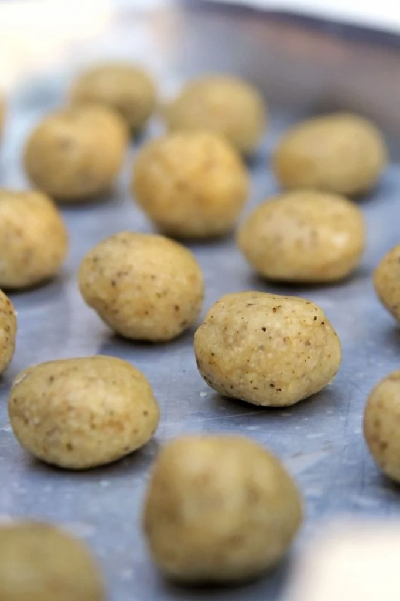
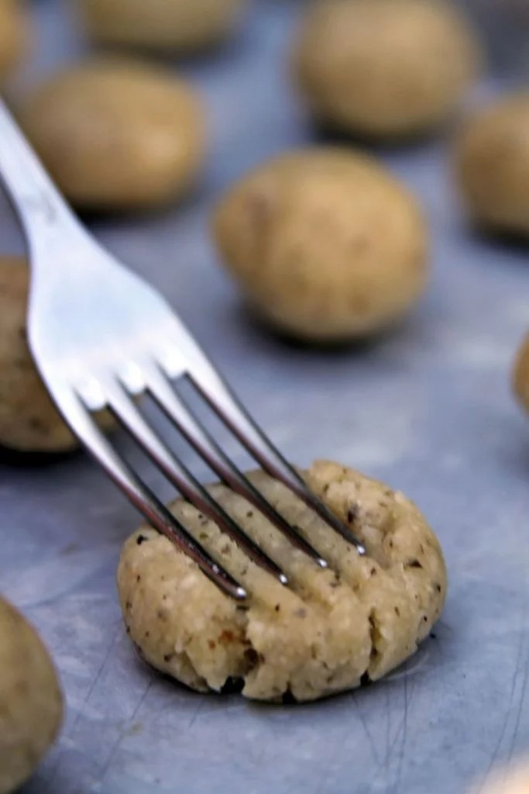

1 xícara de grão-de-bico cozido
1/2 xícara de óleo de girassol ou o óleo da sua preferência
1 dente de alho (opcional)
1 colher de sopa de orégano (ou substitua pelo tempero seco da sua preferência – opcional)
1/2 xícara de polvilho azedo (pode ser polvilho doce, mas o polvilho azedo deixa com um sabor de “queijo“)
1/2 xícara de fécula de batata, araruta ou amido de milho
1/4 xícara de farinha de arroz integral (substitua por farinha de trigo sarraceno)
1 colher de chá de sal
1 colher de chá de goma xantana (sim, precisa usar se não o biscoito vai ficar todo quebradiço e não vai manter o formato)
Esta receita de biscoito é muito simples, mistura primeiro os secos, mistura os molhados e junta tudo, só isso! É só misturar tudo mesmo, fazer bolinhas e apertar com o garfo se quiser deixar eles mais bonitinhos.
Em uma bacia misture os secos: o polvilho azedo, a fécula de batata, a farinha de arroz, o sal e a goma xantana.
Bata no liquidificador o grão-de-bico, o óleo de girassol, o alho e o orégano.
Adicione a massa de grão-de-bico aos ingredientes secos, misture primeiro com a colher e depois amasse com as mãos até formar uma massa modelável.
Faça bolinhas com aproximadamente 1 colher de chá da massa e coloque sobre uma forma com papel manteiga untado.

Depois de modelar toda a massa aperte com um garfo nos dois sentidos do biscoito salgado.

Leve para assar em forno preaquecido à 200º C por aproximadamente 30-35 minutos.
Deixe esfriar e guarde-os em um vidro bem fechado por até 2 semanas.